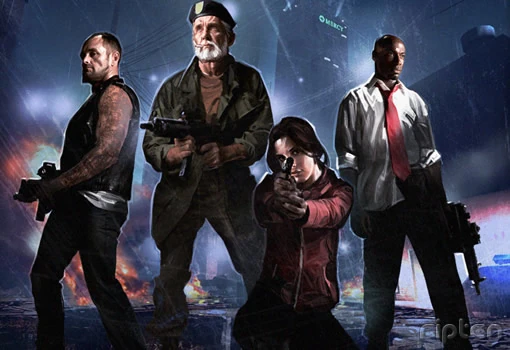
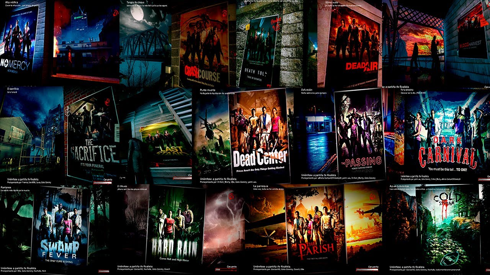
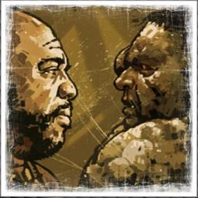

Left 4 Dead 2 es un videojuego de terror y disparos en primera persona desarrollado y publicado por Valve. Es la secuela del aclamado Left 4 Dead y forma parte de la franquicia del mismo nombre.

Como primeros personajes tendremos a los de left for dead
Como secuela de left for dead 2 , tenemos los personajes

Este apartado se divide en dos partes
Infectados comunes : Los Zombies basicos que atacan en grandes grupos

Infectados especiales : Zombies mutados con especiales unicos
Hunter : Ataca saltando sobre los supervivientes.
Smoker: Atrapa a los supervivientes con su lengua
Boomer: Vomita bilis que atrae a la horda.
Tank: : Un enemigo grande y muy fuerte.
Witch: :Un infectado pasivo que, al ser molestado, ataca con furia.
Charger : Un infectado
Campaña
Enfrentamiento
Superviviencia